SOCIAL ACTIVITIES
Opening Ceremony
Date: Monday, 15 July 6 pm - 8:40 pm
Venue: Tokyo International Exchange Center (Plaza Heisei)
Opening Reception
Date: Tuesday, 16 July 6:30 pm
Place: National Museum of Emerging Science and Innovation (Miraikan), “Symbol Zone”
Enjoy the Opening Reception right under the “The Geo-Cosmos”, the symbol exhibit of Miraikan.
This symbol produces a rendition of our Earth shining brightly in space with a super high precision exceeding 10 million pixels. It is the world's first "Globe-like display" using organic LED panels.
Gala Dinner
Date: Friday, 19 July 7 pm - 9 pm
Place: Happo-en
URL: https://happo-en.com/banquet/
- 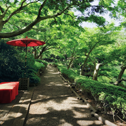
Enjoy the Gala Dinner which will take place in Happo-en restaurant.
Happo-en is grounded in all aspects of Japanese culture - traditional gardens, architecture, culinary techniques, art, music and many others - introducing the world of Japanese beauty and culture.
<Performance>
“Piano player of prelude, Ms. Fuka Tanaka”
- 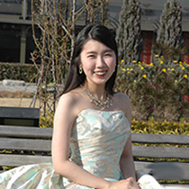
“Yasukazu KANO (Japanese 'Shinobue' Bamboo flute player) with the trio”
- 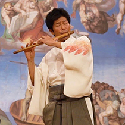
Born in Tokyo in 1963, Kano started playing the drums at age 13. In 1984 he moved to NYC to pursue his career in business, and in 1987 he returned to Japan to pursue his passion for music. He moved to Sado Island to join the internationally renowned 'Taiko' drumming group, KODO. As a taiko drummer and bamboo flute player for KODO, Kano has performed in over a thousand venues worldwide including Carnegie Hall, Berlin Philharmonic Hall and Theatre de la Ville in Paris. In 1997, he left KODO to start his own career as a bamboo flute player.
Kano draws his musical inspiration from the beautiful Japanese nature of Sado Island. He can make the Japanese bamboo flute sing like the birds and sound like the ocean breeze and the forest wind. Kano's melodies are simple and expressive, and his original compositions showcase the blend of traditional and modern, incorporating Japanese scales and rhythms, jazz improvisation, African rhythms and classical music. Kano is always eager to explore new possibilities in music, and welcomes opportunities to collaborate with artists across the musical spectrum.
Kano has given concerts over two thousands venues worldwide, and continues to spread his music throughout the world.
“Nihon Buyo (Dancing) by Kagurazaka Geisha ”
- 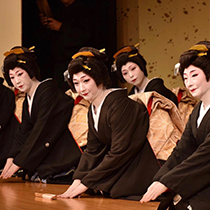
- 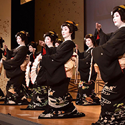
It’s an artistic dance which is one of the major skills required for “Geisha in Tokyo”. We call it "dance" in English but in reality, these traditional Japanese dances are rather "a series of movement" than a "dance".
“Ohayashi (Japanese orchestra)”
The group of performers who play Japanese traditional instruments such as “Shinobue”, ”Taiko” and ”Shamisen” is called 'Ohayashi'.
Nagauta (long epic song with shamisen accompaniment) is performed by "Kagurazaka Geisha" dancer and Ohayashi.
Young Cartographers Social Gathering
Date: Wednesday, 17 July
Venue: National Museum of Emerging Science and Innovation(Miraikan)
* The details will be announced soon.
Japanese Culture and Sightseeing Tour
CS- Tour A:
Tentative name: Japanese Culture and Sightseeing Tour (Supported by Tokyo Metropolitan Government)
(half day Tour) afternoon 16th, 18th of July
Free
* On-site registration
* Tour Detail will be announced soon.
CS- Tour B:
Mt. Fuji and Mt. Hakone, Scienic and Geoscience Volcanos tour
(one day Tour) 15th of July 8 am - 7 pm
JPY 17,000
- 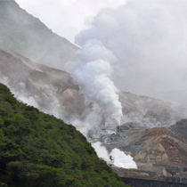
- 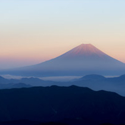
- 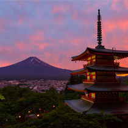
- 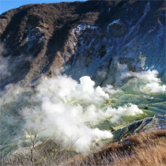
Departure： JR Tokyo Station（Yaesu side Exit）
This one day tour includes very popular sightseeing spots such as Volcano Hakone and Mt.Fuji (distance view from north-side) at Lake Kawaguchi. Boxed lunch (Obento) is included as well, so we are sure that you'll fully enjoy the beautiful day! This tour is highly recommended to the accompany persons visiting Japan for the first time.
CS- Tour C:
Heartful Japan ”Town of Chichibu” and visit
(one day Tour) 20th of July, 9 am - 9 pm
JPY 15,000
- 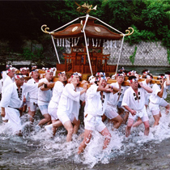
- 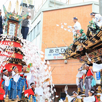
- 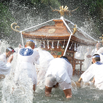
Departure： JR Tokyo Station （Yaesu side Exit）
Visit Chichi Basin Area (60km from Tokyo). "Chichibu" is a small valley in the western part of Saitama prefecture renowned for its rich and varied historical and cultural heritage, historical sites from the old stone age era to the Warring States period (1467-1568), ancient burial mounds, Japanese copper coins, Chichibu Okan (highway), the Chichibu incident (1884),
the Chichibu pilgrimage circuit, and visit the Chichibu water Festival. Chichibu is an idyllic destination popular among City folk, especially for the beauty of its seasons and Nice Local Sake Brewery.
Post Congress Tour
PC-Tour A:
Hiroshima Peace GIS and “Setouchi Inland Sea” Tour, plus Kyoto “Gion Festival”
5 nights and 6 days
20th to 25th of July, 2019
JPY 98,000
- 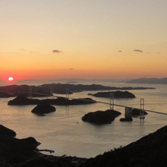
- 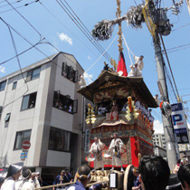
- 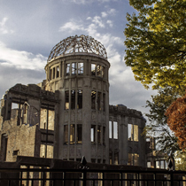
- 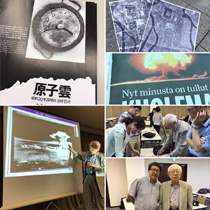
- 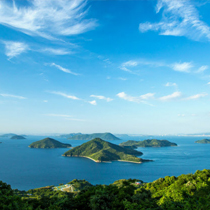
- 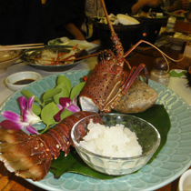
Visit the Hiroshima Peace Museum, and Attend Hiroshima A-bomb Memorial Peace GIS Workshop, School visit at Hiroshima. Nice elegant inland sea cruise and land Historical Old Murakami navy fort Island “Nojima”. World famous fast current “Kurushima strait”. Final destination to Kyoto and observe “Kyoto Gion festival” and back to Tokyo using Bullet train “Shinkansen”
PC-Tour B:
18th Century, old Okinawa “Ryukyu” dynasty's map explore, plus Kyoto “Gion Festival”
4 nights and 5 days
21th to 25th of July, 2019
JPY 89,000
- 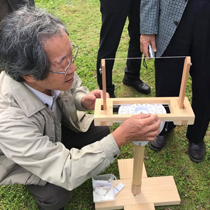
- 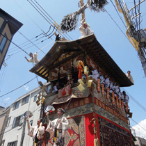
- 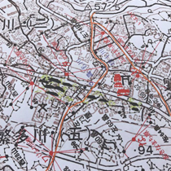
- 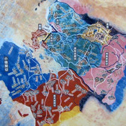
- 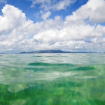

Visit “Okinawa ART and History Museum and Special Exhibition” on Old 18th century Ryukyu maps. In 1780's ”Ryukyu dynasty's Triangulation Cadastral survey and Mapping” through Ming Dynasty in China originated from Cassini Surveying at 1750's in France.
“Okinawa”, Subtropics Island, is a resort Island situated in the South west of Japan, which is the only battle field of II World War, 1945 in Japan. Final destination to Kyoto and observe “Kyoto Gion festival” and back to Tokyo using Bullet train “Shinkansen”.
PC-Tour C:
Old Capitals, “Nara” and “Kyoto” Map Explore tour, plus Kyoto “Gion Festival”
2 nights and 3days
22nd to 24th of July,
JPY 75,000
- 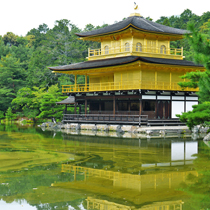
- 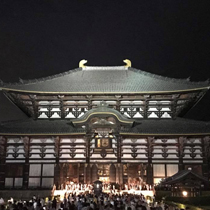
- 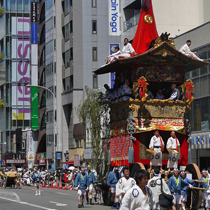
- 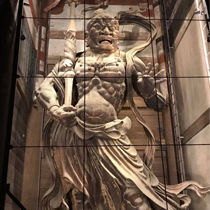
Start our trip into history in Kyoto, one of Japan's ancient capitals, Nijo Castle, the Temple of the Golden Pavilion, and Kyoto's Imperial Palace. After visiting these wonders, stay one night at Kyoto City. On the second day, we move to the idyllic town of Nara.
In Nara, take a moment of Zen at the tranquil Todaiji Temple, home of the world's largest Buddha statue. Learn the legends about the deer that freely roam around Nara Park. We will back convenient transport to Kyoto and stay one more night Kyoto and observe “Kyoto Gion festival” and back to Tokyo using Bullet train “Shinkansen”.
PC-Tour D:
Heartful Country, Town of Takahagi and 18th Century Modern Japanese map maker “Nagakubo Sekisui's Home town”
1 nights and 2 days
21th to 22nd of July, 2019
JPY 20,000
- 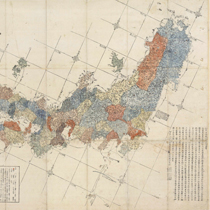
- 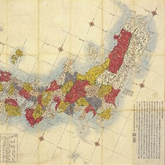
- 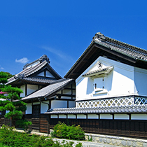
Excursion in Ibaraki Prefecture including the experience of traditional culture. Takahagi City is the home town of Nagakubo Sekisui who made modern maps without survey in 18th century, we inspect the historical materials of editing maps there. Next we visit Koga City has the Koga Historical Museum holding the special exhibition of maps brought to Europe.